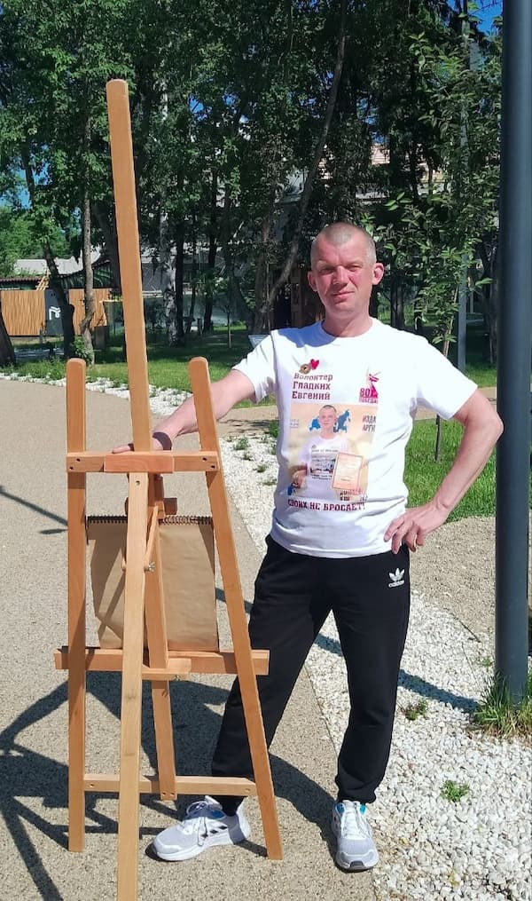

Искусство в каждой детали: Галерея художников типографии «Лазурь»
О нашей галерее
Типография «Лазурь» представляет эксклюзивную коллекцию работ талантливых художников, с которыми мы сотрудничаем. Каждый художник — это уникальная творческая личность, а каждая картина — это история, рассказанная через призму авторского видения.
Галерея работ
Представляем вашему вниманию избранные работы наших художников:
Меренков Сергей Викторович

- Меренков Сергей Викторович, родился в городе Владивостоке Приморского края, 6 апреля 1976 г.
- 1991-1996 Владивостокское Художественное училище, отделение живописи, преподаватель Стукова А.А.
- 1996-2002 Дальневосточная государственная академия искусств. Отделение живописи, преподаватель Жоголева Н.П.
- В 2011-2012 годах разработал эскиз и сделал макет к памятнику моряка во Владивостоке. Установлен.
- С 2016 года начал активно принимать участие в российских и международных выставках.
- С 2018 г. Член "Союза художников России"

Ромашкин Василий
Вася Ромашкин – родился в 1979 году в п.Средний, Иркутской области. В 10 лет переехал с родителями в г.Ипатово, Ставропольского края где получил образование «Мастер общестроительных работ» в профессиональном лицее №28 г.Ипатово. С детских лет увлекся искусством и связал с этим свою жизнь. Художник самоучка. Начал свой творческий путь с рисования карикатур. Участвовал в мировых онлайн конкурсах и занимал призовые места. Это и повлияло на его стиль в котором он работает сегодня – юмористический попарт. Профессионально начал рисовать в новом стиле с открытием ФБ группы «Шар и Крест». Его работы о том, что было бы окажись Советские актеры в Голливуде и наоборот. О повседневной жизни людей и вещей. Неоднократный участник персональных выставок в г.Ипатово. Работы находятся в частных и городских собраниях в т.ч. за рубежом.


Алатырский Вячеслав
Алатырский Вячеслав Викторович— художник-живописец. Родился в Ульяновской обл. Окончил Заочный народный университет искусств имени Н.К. Крупской в Москве, факультет станковой живописи. В творческом объединении художников Димитровграда «Изограф» с 1988 г. Работает в разных техниках: масляная живопись, пастель.
Участвует во всех городских, областных выставках, культурных мероприятиях города и области. Написал около двух тысяч работ. Картины мастера участвуют в выставках и конкурсах городского, областного и федерального масштаба.
- Профессионал во многих жанрах: портрет, пейзаж, натюрморт.
- Резьба по дереву – ещё одна грань творчества Алатырского.
- Награждён грамотами, дипломами. В 2010 г. принят в Творческий союз художников России.
Гладких Евгений

Гладких Евгений Владимирович — свободный художник и волонтёр, который своим творчеством делает добро детям и помогает участникам СВО.
Родился 9 мая 1980 года в городе Реж. Окончил 10-ю школу, после девятого класса поступил в ПТУ на повара-кондитера. Всегда любил рисовать карандашом, сейчас пишет картины гуашью и акриловыми красками, экспериментирует с витражами.
За 4 года написал более 500 картин. Принимал участие в 5 персональных выставках в городах Реж, Алапаевск и селе Черемиское. Провёл 4 благотворительные выставки в помощь детям со спинальной мышечной атрофией (СМА) и 4 благотворительные выставки в поддержку участников СВО. Выставка «Разности» прошла в Екатеринбурге в 2022 году.
Иванова Ольга
Ольга Вячеславовна Иванова предположительно родилась, а сейчас живёт и работает в городе Витебске, Беларусь. Образование высшее, архитектурно-художественное. Работает в жанре натюрморта, архитектурного и городского пейзажа. Особое внимание уделяет акварели. Сотрудничает с издательством "Марка" РУП " Белпочта". Является автором почтовых марок, конвертов, буклетов, новогодних открыток. В 2007г. открыла небольшую галерейку "Картинки из Витебска". Ольга Вячеславовна Иванова рассказывает о себе и своей живописи: "Сюжеты многих работ взяты из реальной жизни. Их мы наблюдали достаточно часто, но не думали, что они, такие обыденные, могут привлечь внимание художника.


Нильская Анастасия
Анастасия Нильская — петербургский художник, член Союза художников Санкт-Петербурга. Родилась в Ленинграде в семье художников, и, наверное, сама судьба определила этот путь. Кстати, её прапрадед — Оттон Людвигович Игнатович, один из известнейших архитекторов Петербурга, так что искусство у неё в крови. Художница училась в Лицее имени Иогансона при Академии Художеств, где получила редкую профессию художника-мультипликатора. Анастасия активно участвует в разнообразных выставках петербургских художников, работала в книжной графике, сценографии и журнальной иллюстрации. Её картины хранятся в частных коллекциях России и за рубежом. В 2011 году она организовала (и стала соорганизатором) независимое сообщество художников «ХВОСТ». Сообщество провело десятки совместных выставок, среди которых: «По обе стороны окна», «Гуляя по крышам», «Не всем известный Петербург», «Тени серебряного века», «Погружаясь в сказку», «Город N и его обитатели». Также запомнилась необычная театральная выставка в Доме актёра, посвящённая творчеству рисующих актёров, и благотворительные проекты, средства от которых идут в приюты. Отдельного внимания заслуживает проект «Моно Лиза», где художники представили своё видение знаменитого образа. Кроме того, Анастасия сделала несколько персональных выставок: «Городские сумасшедшие», «Я не Тулуз Лотрек» и другие. Сама Анастасия делит своё творчество на несколько узнаваемых серий. «Зайцы» появились накануне года Зайца, но так и остались. Потому что заяц — это очень по-человечески. В нём и трусость, неуверенность, хитрость, и вечное увиливание от проблем. Заяц — это мы. Серия «Огурцы» началась с работы «Ходячие огурцы». Художнице показалось, что огурец — это очень точно про нас: такие же простые, свои, немного смешные и очень живые. «Красная серия» — это наследство. Детство в СССР, где всё было украшено красным: плакаты, растяжки, пионерские галстуки, демонстрации. Наше общее прошлое, ставшее искусством. Анастасия много работает как иллюстратор книг. Среди совместных проектов — книга «Белый клоун», выпущенная издательством ИПК «Лазурь». Её картины — это разговор со зрителем: иногда ироничный, иногда грустный, но всегда искренний. И всегда — про нас.


.jpg)
.jpg)
Разина Елена
Елена Георгиевна Разина родилась.в Миассе Челябинской области. Окончила Абрамцевское художественно-промышленное училище имени Виктора Михайловича Васнецова (отделение керамики) и Московский открытый педагогический университет "художественно-графический факультет". "С 2014 по 2019 год мои картины и постеры участвовали в Лейпцигской ярмарке (Германия). Работы находятся в частных коллекциях как в России, так и за рубежом (Германия, Великобритания, США, Швеция, Израиль, Норвегия, Япония и др.). Являюсь членом Профессионального союза художников. Елена Георгиевна Разина - современная российская художница. Она известна своими сложными и фактурными произведениями, созданными с использованием многослойной техники и элементов скобления. Её произведения находятся в частных коллекциях как в России, так и за рубежом, включая Германию, Великобританию, США, Швецию, Израиль, Норвегию и Японию.


Уварова Ирина
Бабиченко Ирина
Живет в Одессе. Предпочитает с юмором изображать одесскую повседневность в стилистике наивной живописи. Свой стиль называет «карикатурным». Ее картины как будто списаны с самих одесситов – соседей, друзей, родственников, жителей колоритных одесских коммун. Работает как в технике масляной живописи, так и пишет акрилом. Ее картины пользуются популярностью не только на родине, но и далеко за пределами. Выставляется в галереях и частных коллекциях в 23 странах мира. Её источники вдохновения — обыденность, коммунальный быт, одесские типажи, домашние животные. Работает в жанрах карикатура, шарж, наивное искусство
Нил Анкушин


Сергеев Андрей
Родился в 1964 под Красноярском, в 1973 переехал в Екатеринбург. Работал в качестве художника-оформителя. После армии поступил в Свердловский Архитектурный Институт на факультет "Дизайн". Излюбленныйй жанр - городской пейзаж.


Соколова Людмила, Александрова Тамара
Родилась в 1969 году в г Сыктывкар, там же окончила педагогическое училище. По окончании переехала в г.Санкт- Петербург, где работала в мастерских по росписи шкатулок в стиле Палех и Федоскино, одновременно обучалась у мастеров живописи.
Далее, в 1990 годах самостоятельно начала продажу своих работ в худ.салонах и магазинах Санкт-Петербурга.
В данное время проживает в г.Тамбов, где успешно занимается графикой, в основном выполняя заказы по оформлению книг, календарей. Так же пишет графические работы в стиле сюр и иллюстрации для книг.
Неоднократно работы были представлены на выставках, в основном активная продажа на онлайн-аукционах. Картины в частных коллекциях России, Испании, Норвегии, Израиля, США, Дании, Германии, Франции, Италии.


.jpg)

.jpg)
.jpg)


.jpg)


.jpg)


Андрей Сикорский
Картина "Как я бросил пить"

Альберт Чатинян


Мгер Чатинян
Мгер Чатинян родился в Армянской ССР в городе Кировакане (нынешний Ванадзор) в 1989 году. Окончив среднюю школу в 2006 году, увлёкся живописью и рисованием. Первым его учителем и вдохновителем стал отец — преподаватель живописи и истории искусств.
В картинах Мгера Чатиняна видно влияние Минаса Аветисяна и Мартироса Сарьяна. Однако художнику удалось найти свою собственную, близкую к абстракции манеру, оставаясь при этом в рамках традиционной национальной живописи[1]. Для работ художника характерны ясно читаемая композиция и контрастные насыщенные цвета.
- В 2010 году окончил Ванадзорский государственный педагогический институт, где обучался на факультете живописи и графики.
- В 2010—2012 годах служил в Вооружённых силах Армении.
- С 2006 года регулярно выставляется в Ванадзоре и в Ереване.
- В 2017 году прошла первая персональная выставка в Москве.
- Участвовал в художественных симпозиумах в Гюмри в 2012, 2013, 2014 годах, в Тбилиси в 2013 году, в Словакии в 2014 году.
- С 2012 года — член Всемирного союза армянских художников.
- С 2019 года — член Союза художников Армении.


Arus Muradyan
Конкина Екатерина
Екатерина Конкина училась в МГХМПА им Строганова. Картины Екатерины участвовали в выставках по всему миру, включая Лувр и Третьяковскую галерею. "Своя философия" московской художницы Екатерины Конкиной. Современный художественный мир России очень разнообразен, полон различными течениями, направлениями, именами. Победитель конкурса авангардной живописи в номинации "Объект" в рамках Российской недели искусств. Многие картины написаны без применения кисти, только с помощью рук. Это ощущение краски, ее текстуры, когда нет ничего между тобой и холстом, добавляет живописи еще больше эмоциональности.

Эль-Сафади Лиана Викторовна
Эль-Сафади Лиана Викторовна (1969 г.)
Художник-живописец, член Союза художников (СХР), участник многочисленных выставок, как в России, так и за рубежом.
Первые художественные навыки получила в семье. В кругу семьи было много иконописцев и рисовальщиков. Закончила ДХШ в г. Феодосия, много путешествовала по России, Украине, Прибалтике, продолжая обучаться живописи. В 80-х годах совершает первые путешествия по Ближнему Востоку. В 1992 г. поступает в Ливанскую академию изящных искусств (ALBA - Academia libanaise des Beaux-Arts) и обучается у французских профессоров по направлению изобразительное искусство. С 1994 г. стала выставлять картины на выставках. Вначале творческого пути в картинах прослеживается реалистическое направление, интересуют бытовые сюжеты, пейзажи, портрет, а также встречаются аллегорические композиции. Затем последовали кардинальные изменения в стилистике, начинаются художественные поиски и эксперименты с материалом - коллажи, смешанная техника и элементы из декоративно-прикладного искусства. В дальнейшем на творчество оказывают влияние народное русское искусство, иконопись и идеи русского авангарда.
Картины находятся в частных коллекциях в России, Германии, США, Финляндии, Испании, Франции, Англии, Канаде, Ливане, Израиле, ОАЭ и других странах.
А так же:
 Жук Василий Иванович
Жук Василий Иванович
 Маматжан Эрланбек
Маматжан Эрланбек
 Мельников А.А
Мельников А.А
 Мила Сладкова
Мила Сладкова
 Рогалев А
Рогалев А
Географическая карта Российской империи XVIII века
Представляем вашему вниманию уникальный экспонат — подлинную географическую карту Российской империи, созданную в XVIII веке. Этот раритет является свидетельством эпохи великих географических открытий и территориального расширения российского государства.
Карта выполнена с удивительной для своего времени точностью и детализацией. На ней отражены важнейшие географические объекты, административные центры и торговые пути того периода. Особое внимание уделено границам империи и новым территориям, присоединённым в результате военных кампаний и дипломатических усилий.
.jpg)
.jpg)
Оригинальные цветные гравюры
В нашей коллекции представлены уникальные образцы изобразительного искусства — оригинальные цветные гравюры, созданные выдающимися мастерами того времени. Эти произведения являются подлинными шедеврами графического искусства.